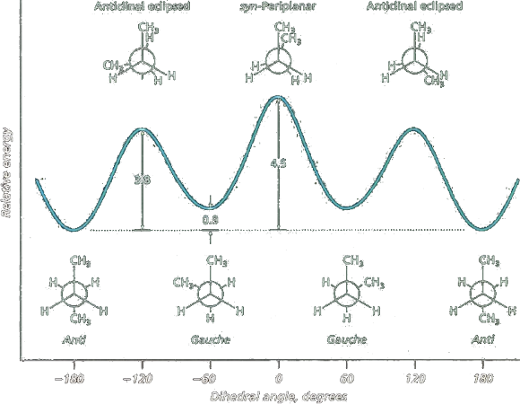

Conformers
Conformers (or conformational isomers) are species that can be interconverted through rotation of one or more single bonds. As two conformations differ in the 3D arrangment of atoms, conformational isomers are also stereoisomers.
Two groups bonded by only a single bond can undergo rotation about that bond with respect to each other.
The temporary molecular shapes that result from such a rotation are called conformations of the molecule;
Each possible structure is called a conformer;
An analysis of the energy changes that occur as a molecule undergoes rotations about single bonds is called a conformational analysis.
Let's consider the standard 2D depiction of the molecule (3S,4S)-4-amino-2,2-dimethylpentan-3-ol. A rotation about the z-axis from the initial 2D depiction, results in a sawhorse projection, whereas the Newman projection has been rotated by 90°.
Newman projection is merely a different way of depicting the same molecule by concentrating on a view down a particular bond from a given direction. The depiction is very useful for considering relative energies for the different conformations a molecule can adopt, reactivities of particular conformations, stereochemical outcomes e.g. for eliminations reactionsn and also the magnitudes of coupling constants (J) in NMR spectroscopy. This is because the dihedral angle or torsion angle, φ, across three bonds or between two adjacent substituents is most easily visualised when looking directly down the central bond. A Newman projection is depicted where the central atom closest to you (in the given view) is represented by the junctions where the four bonds meet, and the furthest atom is represented by a circle with the three other bonds off that circle.
Conformational analysis of Ethane
Taking ethane with its two sp3 carbon centers. Several structures may be drawn which differ merely in degree of rotation about the C-C bond. Two extreme situations may be envisaged; one in which all of the bonds are in line with each other (i.e. eclipsed), the other in which all of the bonds are as far away from each other as possible (i.e. staggered).
These are two extreme "conformations" of ethane, they differ in energy by approximately 2.8 kcal mol-1. In the eclipsed conformation, the proximity of the hydrogen atoms on the two carbon centers leads to unfavorable electronic and steric repulsions, making this a high energy conformation. In contrast, in the staggered conformation these interactions are reduced and this is therefore an energetically favorable arrangement.
Butane
We now consider the case of Butane now. Clearly the addition of two "methyl" groups to the ethane framework leads to an increase in the number of possible conformations and new labels must be introduced. Now the most energetically favored conformation is that with the methyl groups as far apart as possible. To distinguish this from any other staggered arrangement it is labeled anti. The eclipsed conformation in which the methyl groups are in line with each other is labeled syn, this is the highest energy conformation. Isomers bearing substituents separated by a 60° dihedral angle (this orientation is analogous to a staggered conformation in ethane) is called the gauche conformation. The two gauche conformers of butane are mirror images of each other and cannot be superimposed without rotation about the central C-C bond.
The electron density of the two methyl groups fills a volume of space that leads to substantial electrostatic repulsion between them. This repulsive interaction is called a steric effect.